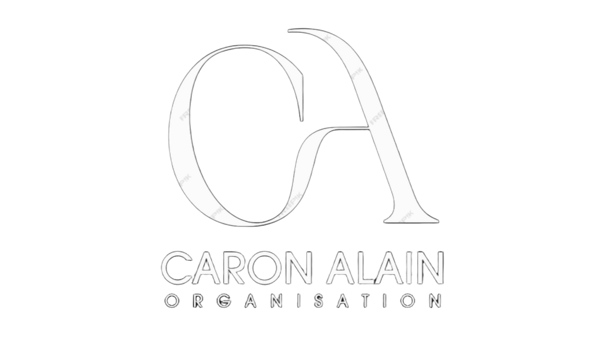

Mariages, incentives, lancements de produit, réceptions privées. La CAO conçoit et orchestre vos événements, sur la Côte d'Azur et à l'international.
Nous contacter« Le temps n'a pas de marche arrière. Heureusement, la mémoire le reprend, le souvenir demeure, l'essence reste. » Alain Caron
Depuis plus de vingt ans, des mariages aux stands internationaux, en passant par les incentives et les réceptions privées.
De la première conversation au dernier souvenir. Nous prenons tout en charge — vous restez présents, seulement.
Faire-part, décor floral, traiteur étoilé, artistes, feux d'artifice. Un accompagnement complet, jusqu'au moindre détail.
Voyages d'entreprise, incentives, séminaires. Nous concevons des programmes qui marquent — en France comme à l'étranger.
Inaugurations, lancements de produit, stands sur mesure. De Dubaï à Shanghai, de Miami à Abu Dhabi.
Après des études de musique classique et de direction d'orchestre, j'ai passé plus de quinze ans comme fleuriste à l'hôtel Byblos, à Saint-Tropez.
De ces deux mondes, j'ai gardé une même conviction : la poésie et la beauté n'existent qu'avec rigueur et discipline. C'est cette exigence qui fait, à mes yeux, l'essence même d'un événement réussi.
— Alain Caron